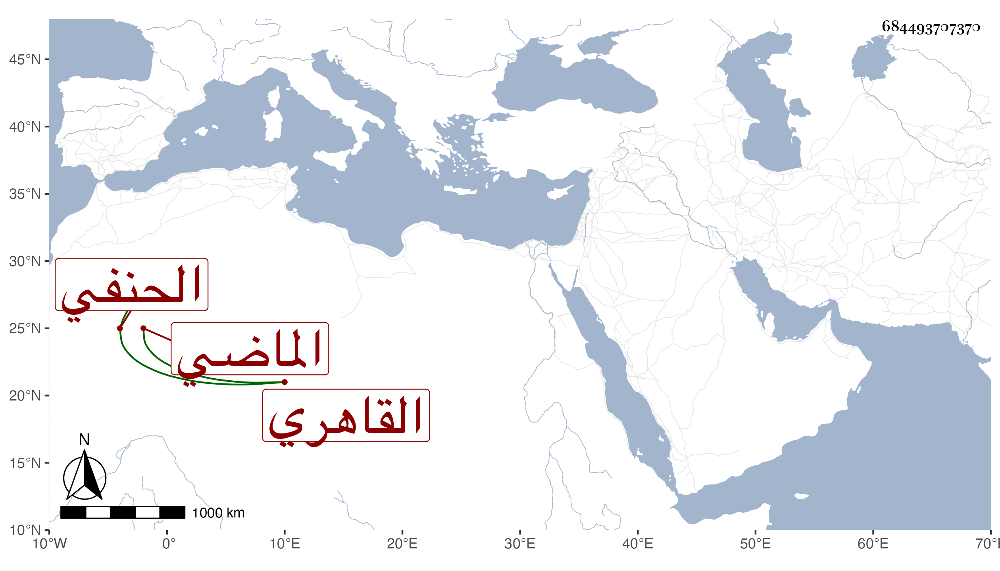

0902Sakhawi.DawLamic.ITO20230111-ara1.EIS1600.684493707370
Biography ID: 684493707370
407
محمد بن محمد بن علي بن محمد التقي بن البدر القاهري الحنفي الماضي أبوه ويعرف كهو بابن القزازي وقال أنه لسكنهم بحارة القزازيين فالله أعلم . ولد في سنة ست وثلاثين وكان جده من أهل القرآن فيما زعم ونشأ هذا عقادا ثم تدرب بناصر الدين النبراوي وجلس بباب البدر بن الديري وابن عمه محمود بل وبباب القاضي سعد الدين وحضر دروسه ثم ناب في الحسبة عن العلاء بن الفيشي لخلطة بينه وبين أبيه إلى أن استنابه ابن الصواف واستمر ينوب لمن بعده وحد ولزم خدمة الأمشاطي وحضر دروسه وصار في أيام قضائه شبه النقيب له وباح بأخرة بعدم حمده له وكذا حضر دروسه وصار في أيام قضائه شبه النقيب له وباح بأخرة بعدم حمده له وكذا حضر دروس الزين قاسم وابن عبيد الله وغيرهما بل حضر عندي بعض الدروس وتنزل في الجهات وتميز في الصناعة مع إظهار تواضع وعقل وسكون وحج غير مرة وباشر نقيبا عند ابن عيد ثم عند الغزي ثم أقبل القاضي على ابن عبيد الوقاد فانجمع عنها وباشر حينئذ النقابة عند الحنبلي مخطوبا منه لها ثم لما ولي الأخميمي عاد لنقابة الحنفية وحمد في مباشراته واستقر بعد الكمال بن الطرابلسي في نوبته وصاهر نور الدين الصوفي مدة على ابنته ثم فارقها ويذكر بثروة .
